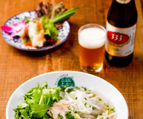
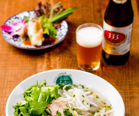
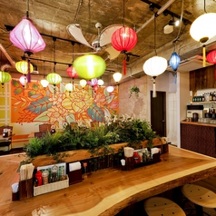
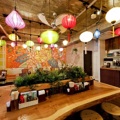

| ふぉー・がー（鶏のふぉー） |
|---|
| 鶏もも肉をトッピング！あっさりとヘルシー！当店Ｎｏ1 メニューです！ |
| ￥780（税込） |
 |
| ふぉー・ぼー（牛のふぉー） |
|---|
| 牛バラ・モモをトッピング！２種類の味が楽しめちゃいます！ |
| ￥850（税込） |
| 春あさりのふぉー |
|---|
| 焼酎で酒蒸ししたあさりとネギをトッピング！コクのあるスープが絶品です！ |
| ￥850（税込） |
 |
| 辛海鮮ふぉー |
|---|
| えび・イカ・ホタテをトッピング！ピリ辛海鮮スープが超美味しい！辛いのがお好きな方におすすめのふぉーです |
| ￥850（税込） |
 |
| じゃ～じゃ～風汁なしふぉー |
|---|
| 甘辛い味噌に麺がよくからみ、やみつきになる味！最後におすすめは、残ったじゃあじゃにジャスミンライスを入れて食べると凄く美味しいんです！！！ ※辛さはお好みで調節できます。お申し付け下さい。 |
| ￥850（税込） |
| 海老とたっぷり野菜の汁なしふぉー |
|---|
| プリップリの海老とたっぷりの野菜にアジアン風味のタレを混ぜて食べるふぉー！ |
| ￥850（税込） |


 



 
